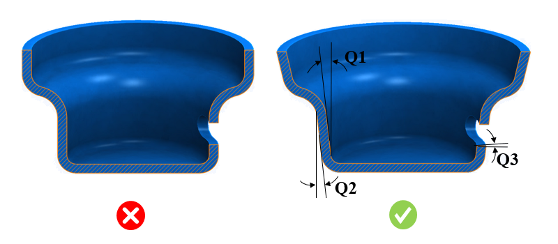

このルールは、オス型（内側面）およびメス型（外側面）に対する最小抜き勾配角度をチェックします。
抜き勾配とは、成形品を金型から容易に取り外すために、垂直側壁に設けられるテーパー角度のことです。成形品を金型から排出する際の離型トラブルを最小限に抑えるため、適切な抜き勾配角度を設定する必要があります。メス型では、材料が金型から収縮して離れるため、要求される抜き勾配角度は比較的小さくなります。一方、オス型では、材料が金型の壁面側に収縮するため、より大きな抜き勾配角度が必要となります。
一般的に、メス型の形状には1.5～2度の抜き勾配が必要であり、オス型の形状には4～6度の抜き勾配が必要です。サイドアクションには0.5度の抜き勾配が必要とされます。
形状が深い、または表面粗さが大きい場合には、さらに大きな抜き勾配角度が必要となります。
ルールUIでは、Map Material から材料の一覧が自動的に読み込まれ、ユーザーは材料およびその値を設定できます。
材料とその値を設定した後、Ctrl+M コマンドを使用することで、ルールUI上で材料グループおよびグレードごとに設定済み材料の一覧をフィルタ表示できます。同じキー（Ctrl+M）を使用してフィルタを解除できます。

ここでは、
Q1 = オス型の抜き勾配角度
Q2 = メス型の抜き勾配角度
Q3 = サイドアクションの抜き勾配角度